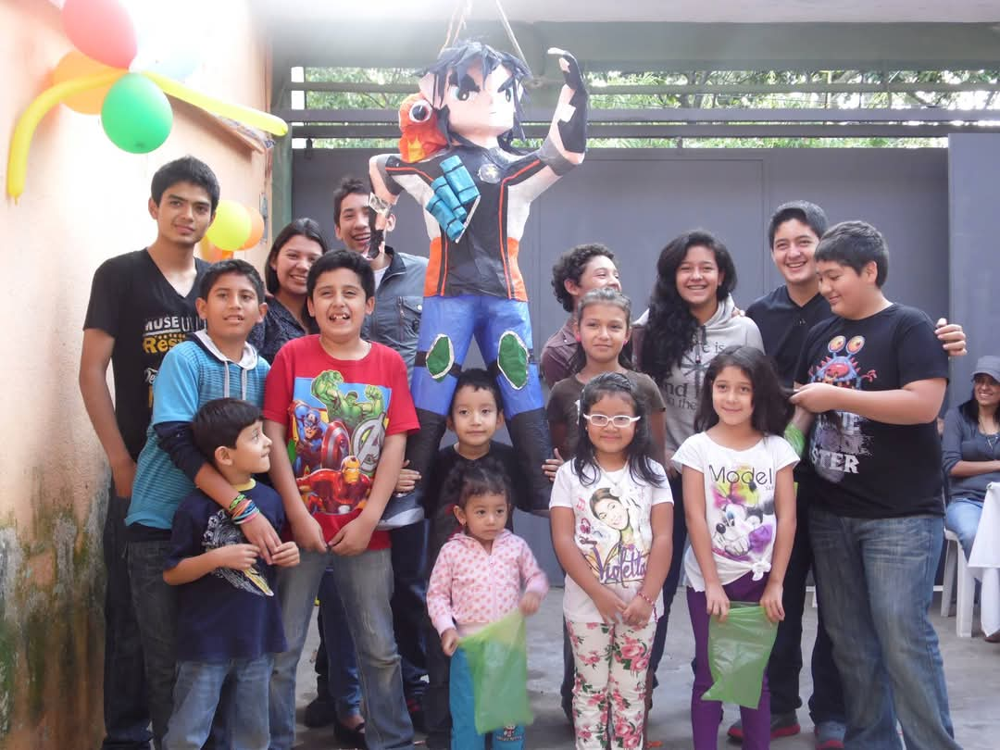
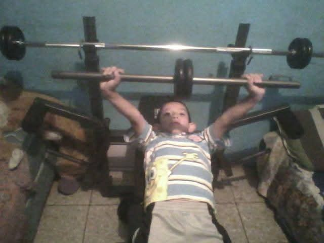
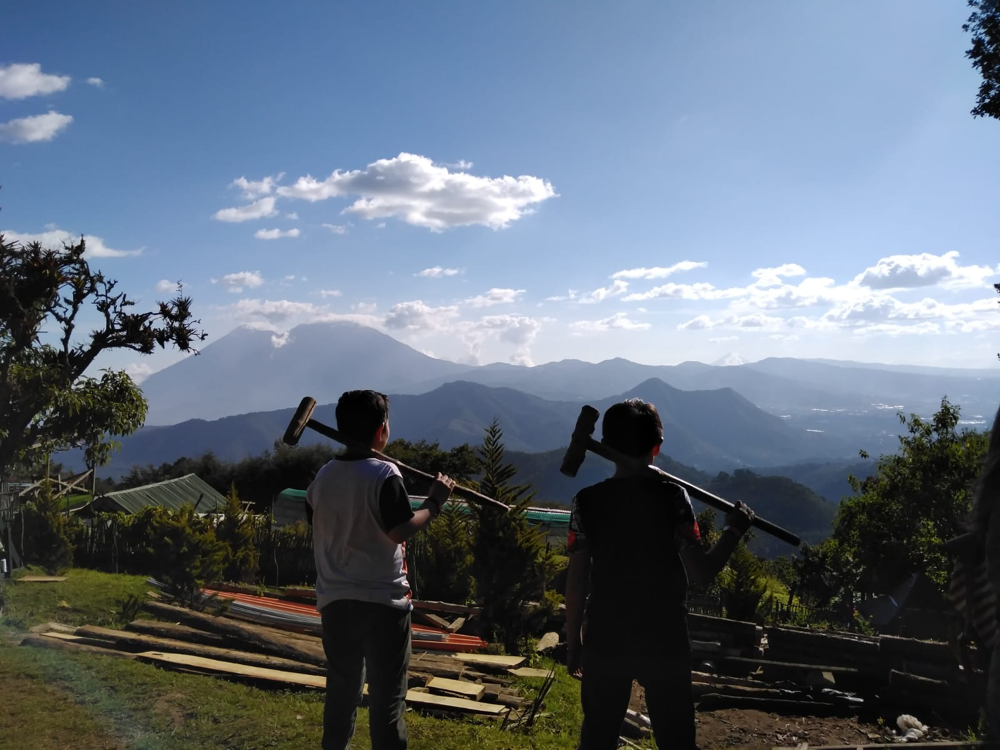

areas prioritarias
Las áreas prioritarias en un proyecto de vida son las áreas de la vida en las que se enfocan los esfuerzos de una persona para alcanzar sus objetivos.

>
familiar
Tener una mayor confianza con mis familiares y así mejorar la comunicación entre nosotros para ser una familia aún más unida.

>
Salud
Lograr un verdadero cambio físico y dejando atrás las inseguridades que me siguen desde pequeño.

espiritual
Ser una persona más calmada la cual pueda actuar según lo que sea correcto ante las adversidades y no guiarme únicamente por lo emocional.
Copyright © 2024 Website. All rights reserved.